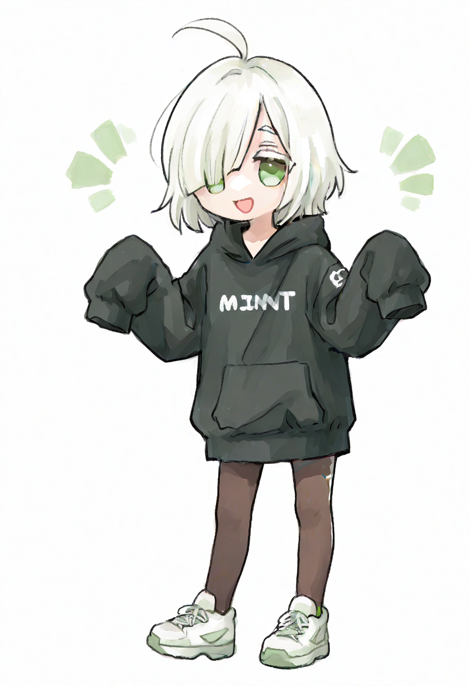
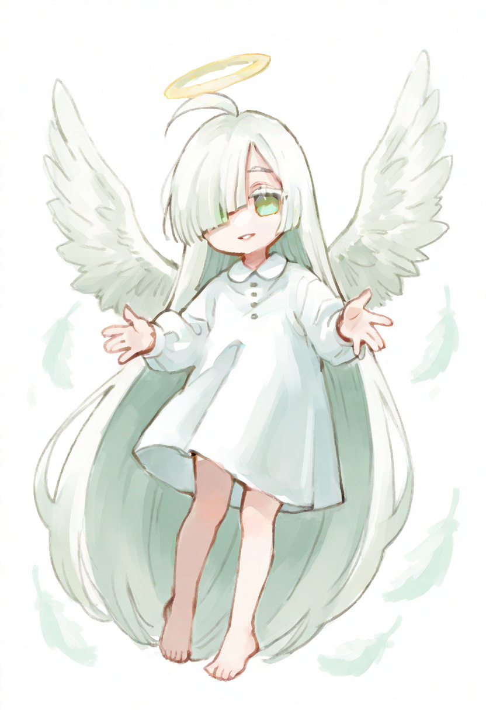
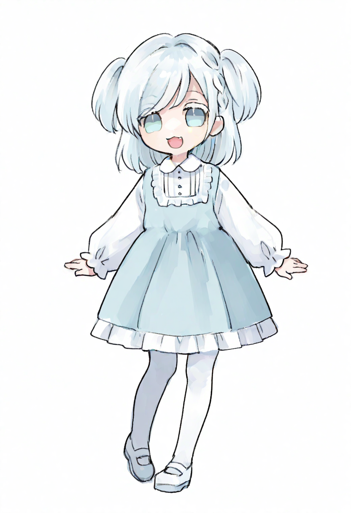
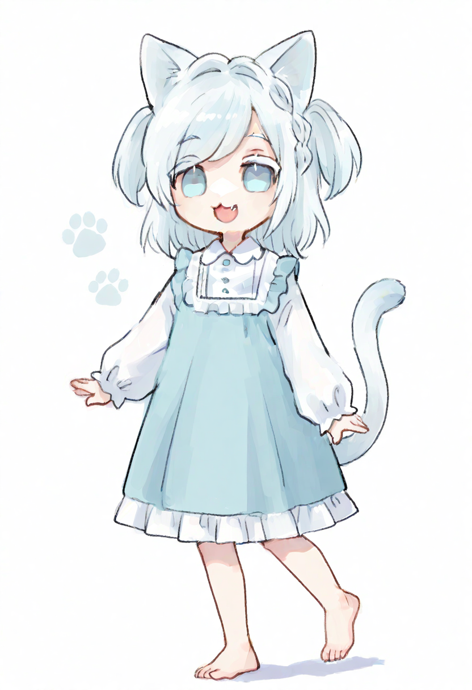
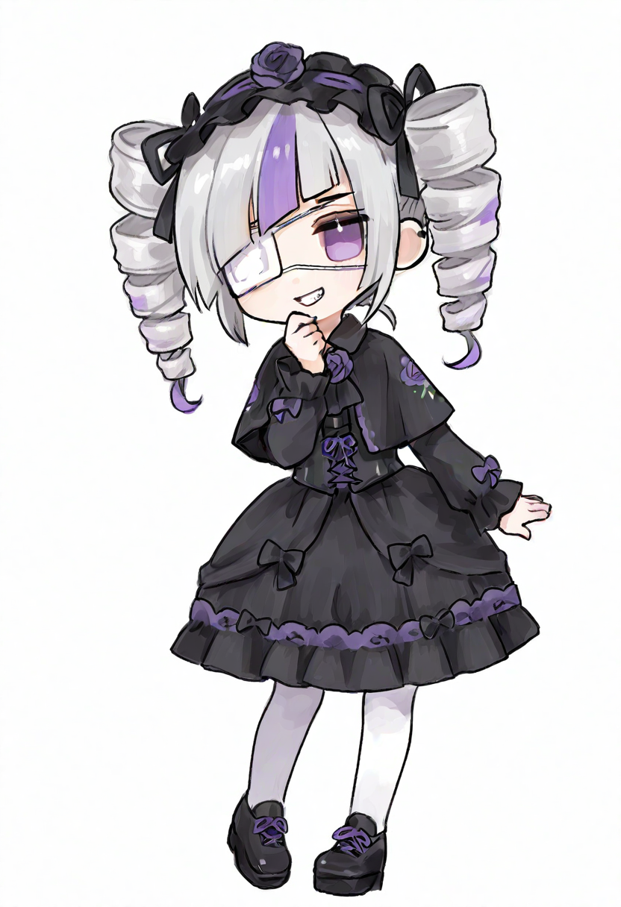
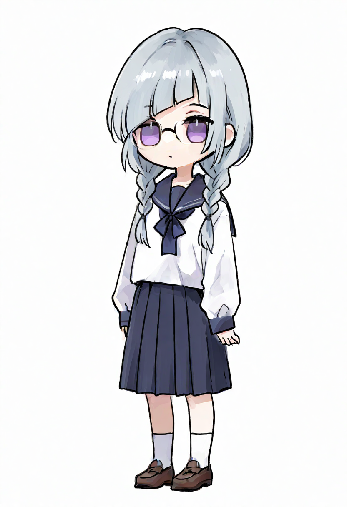
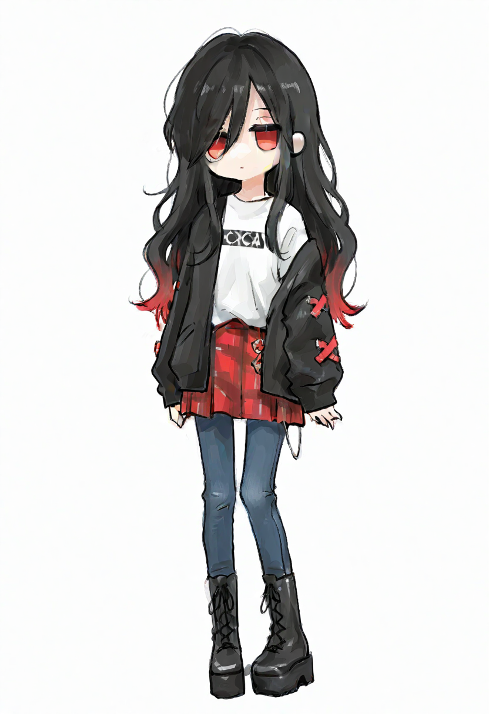
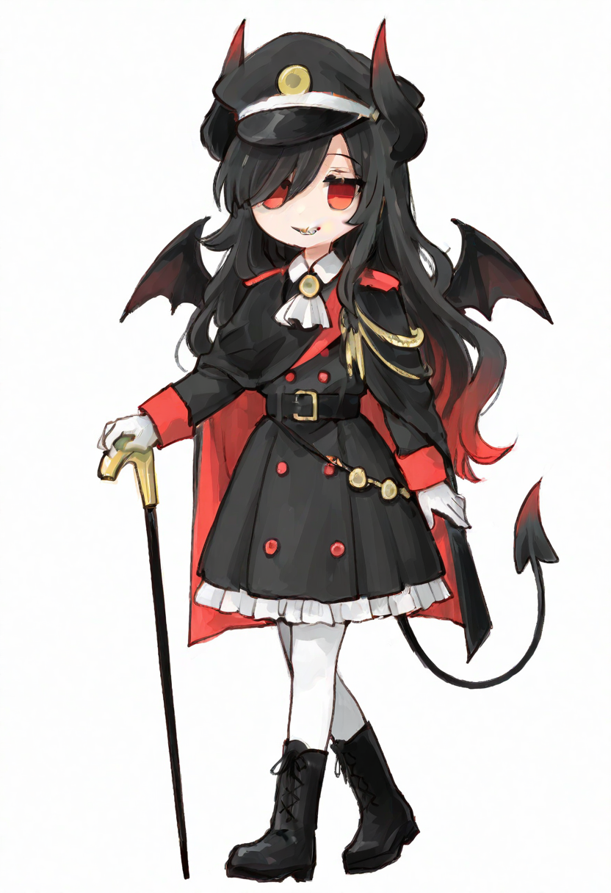
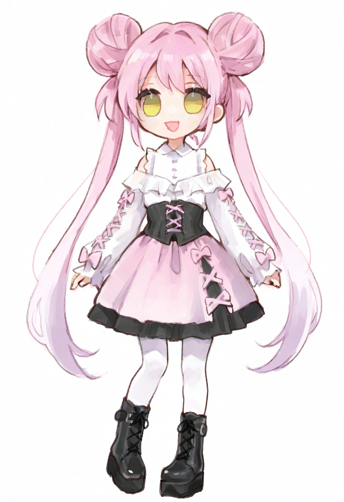
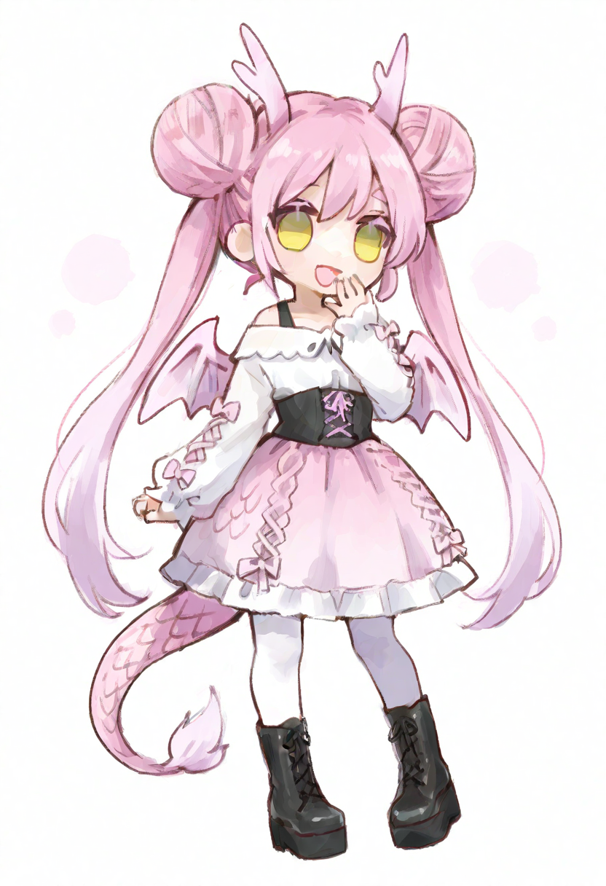

かたり

誕生日 : 11月18日
性別 : 無性別
好きなもの : たまご料理
本来の姿 : 天使

なたり

誕生日 : 2月22日
性別 : 男の娘
好きなもの : おさかな
本来の姿 : 猫

ゴス子

誕生日 : 5月4日
性別 : 女性
本名 : 後藤素子
本来の姿 : 14歳の中学二年生

ベル子

誕生日 : 6月6日
性別 : 女性
本名 : 人間には発音できない
本来の姿 : 悪魔

モモ

誕生日 : 4月23日
性別 : 女性
好きなもの : おにく
本来の姿 : ベル子が飼っているドラゴン
